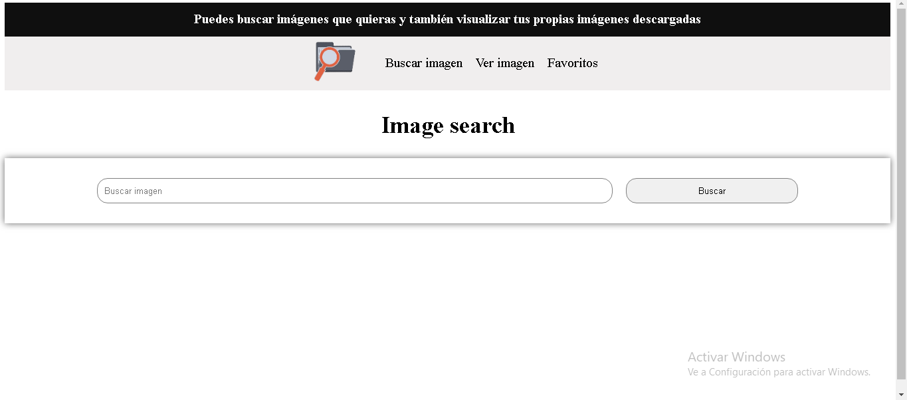
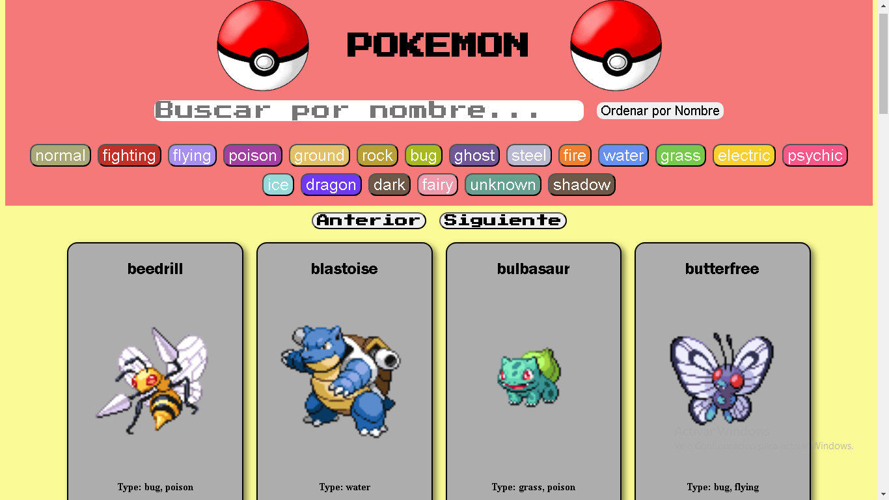

Me desempeño en frontend pero tengo conocimientos en backend.Estuve como practicante en una empresa de ciberseguridad en todo el 2023.
Proyectos
Consiste en dar información del clima con la API OpenWeather. Muestra datos como temperatura máxima y mínima, velocidad del viento, humedad.

Consiste en poder buscar imágenes con la API de Unsplash. También permite añadirlas a favoritos, eliminarlas y subir una imagen desde tu navegador para verla.

Consiste en filtrar por nombre y tipo usando la API de PokeAPI. Muestra los datos de cada Pokémon filtrado.